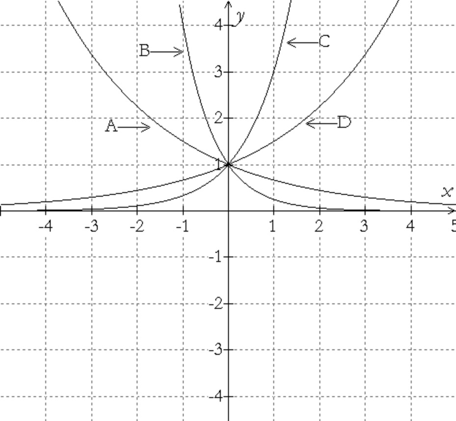
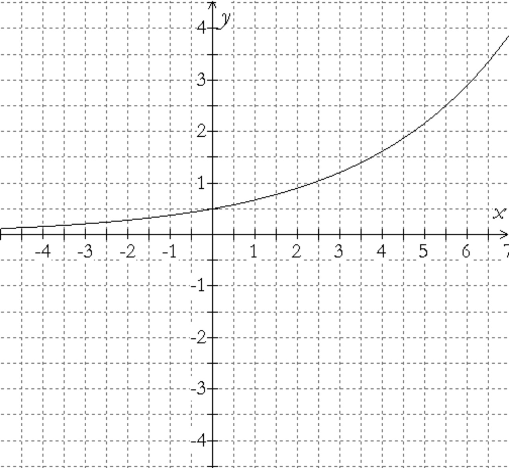
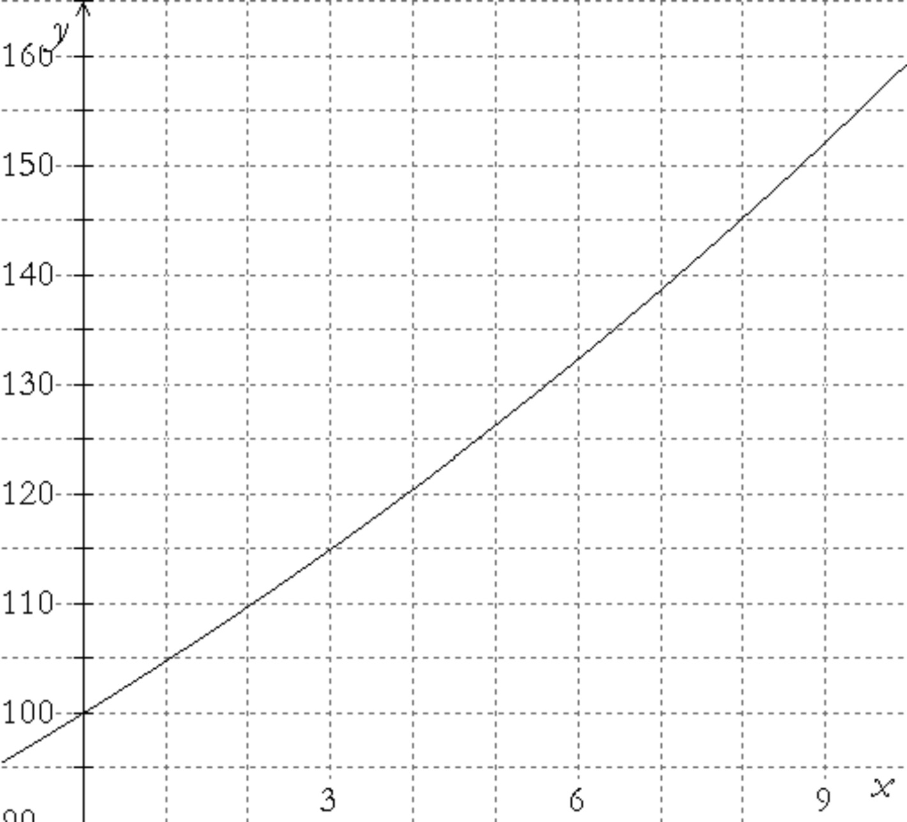

look for patternstinkerdescribevisualizerepresent symbolicallyprovecheck for plausibilitytake things apartconjecturechange or simplify the problemwork backwardsre-examine the problemchange representationscreate
look for patternstinkerdescribevisualizerepresent symbolicallyprovecheck for plausibilitytake things apartconjecturechange or simplify the problemwork backwardsre-examine the problemchange representationscreate
look for patternstinkerdescribevisualizerepresent symbolicallyprovecheck for plausibilitytake things apartconjecturechange or simplify the problemwork backwardsre-examine the problemchange representationscreate
look for patternstinkerdescribevisualizerepresent symbolicallyprovecheck for plausibilitytake things apartconjecturechange or simplify the problemwork backwardsre-examine the problemchange representationscreate
look for patternstinkerdescribevisualizerepresent symbolicallyprovecheck for plausibilitytake things apartconjecturechange or simplify the problemwork backwardsre-examine the problemchange representationscreate
look for patternstinkerdescribevisualizerepresent symbolicallyprovecheck for plausibilitytake things apartconjecturechange or simplify the problemwork backwardsre-examine the problemchange representationscreate
look for patternstinkerdescribevisualizerepresent symbolicallyprovecheck for plausibilitytake things apartconjecturechange or simplify the problemwork backwardsre-examine the problemchange representationscreate
look for patternstinkerdescribevisualizerepresent symbolicallyprovecheck for plausibilitytake things apartconjecturechange or simplify the problemwork backwardsre-examine the problemchange representationscreate
look for patternstinkerdescribevisualizerepresent symbolicallyprovecheck for plausibilitytake things apartconjecturechange or simplify the problemwork backwardsre-examine the problemchange representationscreate
look for patternstinkerdescribevisualizerepresent symbolicallyprovecheck for plausibilitytake things apartconjecturechange or simplify the problemwork backwardsre-examine the problemchange representationscreate
look for patternstinkerdescribevisualizerepresent symbolicallyprovecheck for plausibilitytake things apartconjecturechange or simplify the problemwork backwardsre-examine the problemchange representationscreate
look for patternstinkerdescribevisualizerepresent symbolicallyprovecheck for plausibilitytake things apartconjecturechange or simplify the problemwork backwardsre-examine the problemchange representationscreate
look for patternstinkerdescribevisualizerepresent symbolicallyprovecheck for plausibilitytake things apartconjecturechange or simplify the problemwork backwardsre-examine the problemchange representationscreate
look for patternstinkerdescribevisualizerepresent symbolicallyprovecheck for plausibilitytake things apartconjecturechange or simplify the problemwork backwardsre-examine the problemchange representationscreate
look for patternstinkerdescribevisualizerepresent symbolicallyprovecheck for plausibilitytake things apartconjecturechange or simplify the problemwork backwardsre-examine the problemchange representationscreate
look for patternstinkerdescribevisualizerepresent symbolicallyprovecheck for plausibilitytake things apartconjecturechange or simplify the problemwork backwardsre-examine the problemchange representationscreate
look for patternstinkerdescribevisualizerepresent symbolicallyprovecheck for plausibilitytake things apartconjecturechange or simplify the problemwork backwardsre-examine the problemchange representationscreate
look for patternstinkerdescribevisualizerepresent symbolicallyprovecheck for plausibilitytake things apartconjecturechange or simplify the problemwork backwardsre-examine the problemchange representationscreate
look for patternstinkerdescribevisualizerepresent symbolicallyprovecheck for plausibilitytake things apartconjecturechange or simplify the problemwork backwardsre-examine the problemchange representationscreate
look for patternstinkerdescribevisualizerepresent symbolicallyprovecheck for plausibilitytake things apartconjecturechange or simplify the problemwork backwardsre-examine the problemchange representationscreate
Habits
look for patternstinkerdescribevisualizerepresent symbolicallyprovecheck for plausibilitytake things apartconjecturechange or simplify the problemwork backwardsre-examine the problemchange representationscreate
look for patternstinkerdescribevisualizerepresent symbolicallyprovecheck for plausibilitytake things apartconjecturechange or simplify the problemwork backwardsre-examine the problemchange representationscreate
look for patternstinkerdescribevisualizerepresent symbolicallyprovecheck for plausibilitytake things apartconjecturechange or simplify the problemwork backwardsre-examine the problemchange representationscreate
look for patternstinkerdescribevisualizerepresent symbolicallyprovecheck for plausibilitytake things apartconjecturechange or simplify the problemwork backwardsre-examine the problemchange representationscreate
look for patternstinkerdescribevisualizerepresent symbolicallyprovecheck for plausibilitytake things apartconjecturechange or simplify the problemwork backwardsre-examine the problemchange representationscreate
look for patternstinkerdescribevisualizerepresent symbolicallyprovecheck for plausibilitytake things apartconjecturechange or simplify the problemwork backwardsre-examine the problemchange representationscreate
look for patternstinkerdescribevisualizerepresent symbolicallyprovecheck for plausibilitytake things apartconjecturechange or simplify the problemwork backwardsre-examine the problemchange representationscreate
look for patternstinkerdescribevisualizerepresent symbolicallyprovecheck for plausibilitytake things apartconjecturechange or simplify the problemwork backwardsre-examine the problemchange representationscreate
look for patternstinkerdescribevisualizerepresent symbolicallyprovecheck for plausibilitytake things apartconjecturechange or simplify the problemwork backwardsre-examine the problemchange representationscreate
look for patternstinkerdescribevisualizerepresent symbolicallyprovecheck for plausibilitytake things apartconjecturechange or simplify the problemwork backwardsre-examine the problemchange representationscreate
look for patternstinkerdescribevisualizerepresent symbolicallyprovecheck for plausibilitytake things apartconjecturechange or simplify the problemwork backwardsre-examine the problemchange representationscreate
look for patternstinkerdescribevisualizerepresent symbolicallyprovecheck for plausibilitytake things apartconjecturechange or simplify the problemwork backwardsre-examine the problemchange representationscreate
look for patternstinkerdescribevisualizerepresent symbolicallyprovecheck for plausibilitytake things apartconjecturechange or simplify the problemwork backwardsre-examine the problemchange representationscreate
look for patternstinkerdescribevisualizerepresent symbolicallyprovecheck for plausibilitytake things apartconjecturechange or simplify the problemwork backwardsre-examine the problemchange representationscreate
look for patternstinkerdescribevisualizerepresent symbolicallyprovecheck for plausibilitytake things apartconjecturechange or simplify the problemwork backwardsre-examine the problemchange representationscreate
look for patternstinkerdescribevisualizerepresent symbolicallyprovecheck for plausibilitytake things apartconjecturechange or simplify the problemwork backwardsre-examine the problemchange representationscreate
look for patternstinkerdescribevisualizerepresent symbolicallyprovecheck for plausibilitytake things apartconjecturechange or simplify the problemwork backwardsre-examine the problemchange representationscreate
look for patternstinkerdescribevisualizerepresent symbolicallyprovecheck for plausibilitytake things apartconjecturechange or simplify the problemwork backwardsre-examine the problemchange representationscreate
look for patternstinkerdescribevisualizerepresent symbolicallyprovecheck for plausibilitytake things apartconjecturechange or simplify the problemwork backwardsre-examine the problemchange representationscreate
look for patternstinkerdescribevisualizerepresent symbolicallyprovecheck for plausibilitytake things apartconjecturechange or simplify the problemwork backwardsre-examine the problemchange representationscreate
of Mind
look for patterns
to look for patterns amongst a set of numbers or figures
tinker
to play around with numbers, figures, or other mathematical expressions in order to learn something more about them or the situation; experiment
describe
to describe clearly a problem, a process, a series of steps to a solution; modulate the language (its complexity or formalness) depending on the audience
visualize
to draw, or represent in some fashion, a diagram in order to help understand a problem; to interpret or vary a given diagram
represent symbolically
to use algebra to solve problems efficiently and to have more confidence in one’s answer, and also so as to communicate solutions more persuasively, to acquire deeper understanding of problems, and to investigate the possibility of multiple solutions
prove
to desire that a statement be proved to you or by you; to engage in dialogue aimed at clarifying an argument; to establish a deductive proof; to use indirect reasoning or a counterexample as a way of constructing an argument
check for plausibility
to routinely check the reasonableness of any statement in a problem or its proposed solution, regardless of whether it seems true or false on initial impression; to be particularly skeptical of results that seem contradictory or implausible, whether the source be peer, teacher, evening news, book, newspaper, internet or some other; and to look at special and limiting cases to see if a formula or an argument makes sense in some easily examined specific situations
take things apart
to break a large or complex problem into smaller chunks or cases, achieve some understanding of these parts or cases, and rebuild the original problem; to focus on one part of a problem (or definition or concept) in order to understand the larger problem
conjecture
to generalize from specific examples; to extend or combine ideas in order to form new ones
change or simplify the problem
to change some variables or unknowns to numbers; to change the value of a constant to make the problem easier; change one of the conditions of the problem; to reduce or increase the number of conditions; to specialize the problem; make the problem more general
work backwards
to reverse a process as a way of trying to understand it or as a way of learning something new; to work a problem backwards as a way of solving
re-examine the problem
to look at a problem slowly and carefully, closely examining it and thinking about the meaning and implications of each term, phrase, number and piece of information given before trying to answer the question posed
change representations
to look at a problem from a different perspective by representing it using mathematical concepts that are not directly suggested by the problem; to invent an equivalent problem, about a seemingly different situation, to which the present problem can be reduced; to use a different field (mathematics or other) from the present problem’s field in order to learn more about its structure
create
to invent mathematics both for utilitarian purposes (such as in constructing an algorithm) and for fun (such as in a mathematical game); to posit a series of premises (axioms) and see what can be logically derived from them
look for patternstinkerdescribevisualizerepresent symbolicallyprovecheck for plausibilitytake things apartconjecturechange or simplify the problemwork backwardsre-examine the problemchange representationscreate
look for patternstinkerdescribevisualizerepresent symbolicallyprovecheck for plausibilitytake things apartconjecturechange or simplify the problemwork backwardsre-examine the problemchange representationscreate
look for patternstinkerdescribevisualizerepresent symbolicallyprovecheck for plausibilitytake things apartconjecturechange or simplify the problemwork backwardsre-examine the problemchange representationscreate
look for patternstinkerdescribevisualizerepresent symbolicallyprovecheck for plausibilitytake things apartconjecturechange or simplify the problemwork backwardsre-examine the problemchange representationscreate
look for patternstinkerdescribevisualizerepresent symbolicallyprovecheck for plausibilitytake things apartconjecturechange or simplify the problemwork backwardsre-examine the problemchange representationscreate
look for patternstinkerdescribevisualizerepresent symbolicallyprovecheck for plausibilitytake things apartconjecturechange or simplify the problemwork backwardsre-examine the problemchange representationscreate
look for patternstinkerdescribevisualizerepresent symbolicallyprovecheck for plausibilitytake things apartconjecturechange or simplify the problemwork backwardsre-examine the problemchange representationscreate
look for patternstinkerdescribevisualizerepresent symbolicallyprovecheck for plausibilitytake things apartconjecturechange or simplify the problemwork backwardsre-examine the problemchange representationscreate
look for patternstinkerdescribevisualizerepresent symbolicallyprovecheck for plausibilitytake things apartconjecturechange or simplify the problemwork backwardsre-examine the problemchange representationscreate
look for patternstinkerdescribevisualizerepresent symbolicallyprovecheck for plausibilitytake things apartconjecturechange or simplify the problemwork backwardsre-examine the problemchange representationscreate
look for patternstinkerdescribevisualizerepresent symbolicallyprovecheck for plausibilitytake things apartconjecturechange or simplify the problemwork backwardsre-examine the problemchange representationscreate
look for patternstinkerdescribevisualizerepresent symbolicallyprovecheck for plausibilitytake things apartconjecturechange or simplify the problemwork backwardsre-examine the problemchange representationscreate
look for patternstinkerdescribevisualizerepresent symbolicallyprovecheck for plausibilitytake things apartconjecturechange or simplify the problemwork backwardsre-examine the problemchange representationscreate
look for patternstinkerdescribevisualizerepresent symbolicallyprovecheck for plausibilitytake things apartconjecturechange or simplify the problemwork backwardsre-examine the problemchange representationscreate
look for patternstinkerdescribevisualizerepresent symbolicallyprovecheck for plausibilitytake things apartconjecturechange or simplify the problemwork backwardsre-examine the problemchange representationscreate
look for patternstinkerdescribevisualizerepresent symbolicallyprovecheck for plausibilitytake things apartconjecturechange or simplify the problemwork backwardsre-examine the problemchange representationscreate
look for patternstinkerdescribevisualizerepresent symbolicallyprovecheck for plausibilitytake things apartconjecturechange or simplify the problemwork backwardsre-examine the problemchange representationscreate
look for patternstinkerdescribevisualizerepresent symbolicallyprovecheck for plausibilitytake things apartconjecturechange or simplify the problemwork backwardsre-examine the problemchange representationscreate
look for patternstinkerdescribevisualizerepresent symbolicallyprovecheck for plausibilitytake things apartconjecturechange or simplify the problemwork backwardsre-examine the problemchange representationscreate
look for patternstinkerdescribevisualizerepresent symbolicallyprovecheck for plausibilitytake things apartconjecturechange or simplify the problemwork backwardsre-examine the problemchange representationscreate
Habits
look for patternstinkerdescribevisualizerepresent symbolicallyprovecheck for plausibilitytake things apartconjecturechange or simplify the problemwork backwardsre-examine the problemchange representationscreate
look for patternstinkerdescribevisualizerepresent symbolicallyprovecheck for plausibilitytake things apartconjecturechange or simplify the problemwork backwardsre-examine the problemchange representationscreate
look for patternstinkerdescribevisualizerepresent symbolicallyprovecheck for plausibilitytake things apartconjecturechange or simplify the problemwork backwardsre-examine the problemchange representationscreate
look for patternstinkerdescribevisualizerepresent symbolicallyprovecheck for plausibilitytake things apartconjecturechange or simplify the problemwork backwardsre-examine the problemchange representationscreate
look for patternstinkerdescribevisualizerepresent symbolicallyprovecheck for plausibilitytake things apartconjecturechange or simplify the problemwork backwardsre-examine the problemchange representationscreate
look for patternstinkerdescribevisualizerepresent symbolicallyprovecheck for plausibilitytake things apartconjecturechange or simplify the problemwork backwardsre-examine the problemchange representationscreate
look for patternstinkerdescribevisualizerepresent symbolicallyprovecheck for plausibilitytake things apartconjecturechange or simplify the problemwork backwardsre-examine the problemchange representationscreate
look for patternstinkerdescribevisualizerepresent symbolicallyprovecheck for plausibilitytake things apartconjecturechange or simplify the problemwork backwardsre-examine the problemchange representationscreate
look for patternstinkerdescribevisualizerepresent symbolicallyprovecheck for plausibilitytake things apartconjecturechange or simplify the problemwork backwardsre-examine the problemchange representationscreate
look for patternstinkerdescribevisualizerepresent symbolicallyprovecheck for plausibilitytake things apartconjecturechange or simplify the problemwork backwardsre-examine the problemchange representationscreate
look for patternstinkerdescribevisualizerepresent symbolicallyprovecheck for plausibilitytake things apartconjecturechange or simplify the problemwork backwardsre-examine the problemchange representationscreate
look for patternstinkerdescribevisualizerepresent symbolicallyprovecheck for plausibilitytake things apartconjecturechange or simplify the problemwork backwardsre-examine the problemchange representationscreate
look for patternstinkerdescribevisualizerepresent symbolicallyprovecheck for plausibilitytake things apartconjecturechange or simplify the problemwork backwardsre-examine the problemchange representationscreate
look for patternstinkerdescribevisualizerepresent symbolicallyprovecheck for plausibilitytake things apartconjecturechange or simplify the problemwork backwardsre-examine the problemchange representationscreate
look for patternstinkerdescribevisualizerepresent symbolicallyprovecheck for plausibilitytake things apartconjecturechange or simplify the problemwork backwardsre-examine the problemchange representationscreate
look for patternstinkerdescribevisualizerepresent symbolicallyprovecheck for plausibilitytake things apartconjecturechange or simplify the problemwork backwardsre-examine the problemchange representationscreate
look for patternstinkerdescribevisualizerepresent symbolicallyprovecheck for plausibilitytake things apartconjecturechange or simplify the problemwork backwardsre-examine the problemchange representationscreate
look for patternstinkerdescribevisualizerepresent symbolicallyprovecheck for plausibilitytake things apartconjecturechange or simplify the problemwork backwardsre-examine the problemchange representationscreate
look for patternstinkerdescribevisualizerepresent symbolicallyprovecheck for plausibilitytake things apartconjecturechange or simplify the problemwork backwardsre-examine the problemchange representationscreate
look for patternstinkerdescribevisualizerepresent symbolicallyprovecheck for plausibilitytake things apartconjecturechange or simplify the problemwork backwardsre-examine the problemchange representationscreate
of Mind
re-examine the problem
A census taker came to a house where a man lived with
3 daughters. “What are your daughters’ ages?” she asked.
The man replied, “The product of their ages is 36, and
the
sum of their ages is equal to our house number.”
“That’s still not enough information” the census taker said,
after looking
at the number.
“Sorry, I have to go”, the man said, “my oldest daughter
needs help making blueberry pancakes”.
The census taker then promptly wrote down the three
daughters’ ages and
moved on to the next house. How did she know the ages? What
are the ages?
Some mathematics problems are challenging because they just
do not seem to provide enough information to the reader to be
solved. Often, though, that is because we have not looked
carefully enough at the question and thought about what each of
the words being used implies. To Re-examine the Problem is to
look at each and every word, term, and equation in the
statement of the problem and to see if there is more
information to be gleaned from them if you look more
closely.
In the problem above, at first it seems that much of the
information given is completely unhelpful and irrelevant.
Although there seems to be insufficient information to
determine the daughters’ ages, that should prompt us to
re-examine the problem to see if some of that “irrelevant”
information can in fact be used productively. While knowing the
product of the ages is 36 doesn’t tell us the ages of the
daughters, it does limit the possibilities of what the ages
could be. What are the possibilities? And although we don’t
know the house number, the census taker does, and yet she still
cannot say for sure what the ages are. So, which of the
possibilities that you listed are consistent with that fact?
And while blueberry pancakes are soon to be eaten by the man
and his daughter, is that the only piece of additional
information you can get from that sentence?
Three squares are placed next to each other as shown. The
vertices A, B,
and C are collinear. Find the dimensions of the largest
square.
(Copyright Phillips Exeter Academy.)
Sometimes, even when a problem does not seem to be all that
complicated, we still find that there seems to be insufficient
information. Often that is because we have not looked fully at
what the words in the question imply. For example, although you
likely took care to label the lengths of all 12 sides of the 3
squares, did you ask yourself what it means for A, B, and C to
be collinear? What do line segments AB and BC thus have in
common? It is easy for us to “read past” certain words without
fully grasping what they are telling us. Carefully re-examining
the problem gives us a chance to really slow down and look, as
if with a microscope, at each individual part.
A triangle where each side is an integer has a perimeter
of 8. What is its area?
A man was looking at a portrait. Someone asked him, “Whose
picture are you looking at?” He replied: “Brothers and
sisters have I none, but this man’s father is my father’s
son.”
Whose picture was the man looking at?
Which will save you the most amount of gas in a year:
changing from a 10 mpg to a 20 mpg car, changing from a 20
mpg to a 40 mpg car, or changing from a 40 mpg to an 80 mpg
car?
At 6 o’clock the wall clock struck 6 times. Checking with
my watch, I noticed that the time between the first and last
strokes was 30 seconds. How long will the clock take to
strike 12 at midnight?
If 4 copiers can process 400 sheets of paper in 4 hours,
how long would it take
8 copiers to process 800 sheets?
If your answer to #7 was “8 hours”, read the question
again, slowly, and think carefully about what the information
you are given is actually telling you!
Smallville and Tinytown are 200 miles apart and are
connected by a straight railroad track. At 2 o’clock a train
leaves Smallville at 50 mph and another train leaves Tinytown
at 40 mph. When they eventually meet, which train will be
closer to Tinytown?
Take a look at the following proof:
$\begin{array}{l} a =
b\\ {a^2} = ba\\ {a^2} - {b^2} = ba -
{b^2}\\ {a^2} - {b^2} = b(a - b)\\ (a + b)(a - b) = b(a -
b)\\ a + b = b\\ 2b = b\\ 2 = 1 \end{array}$
What went wrong?
In the figure below, can one determine $\angle A + \angle
B + \angle C + \angle D$ in terms of angle n? If not, explain
why. If so, what does it equal?
Amber bought several identical boxes of CrazyCreme cookies
to serve at a big party. She noticed as she was leaving
the store that the number of boxes she bought is the same as
the number of cents in the cost of a single box. If she spent
\$37.44 total, what is the cost of a single box of
cookies?
How many integers from 1 to 400,
inclusive, are not the square of an integer?
If $0 \le w \le 6$ and $- 2 \le p \le 4$, what is the
largest and smallest value $wp$ can have?
Three businessmen — Smith, Robinson, and Jones — all live
in the Leeds-Sheffield district. Three railwaymen (a guard, a
stoker, and an engineer) of similar names live in the same
district. The businessman Robinson and the guard live at
Sheffield, the businessman Jones and the stoker live at
Leeds, while the businessman Smith and the railway engineer
live halfway between Leeds and Sheffield. The guard’s
namesake earns \$10,000 per annum, and the engineer earns
exactly one-third of the salary of the businessman living
nearest to him. Finally, the railwayman Smith beats the
stoker at billiards. What is the engineer’s name?
For what values of $x$ does ${2^x} + {x^4} + 3 = 0$?
If $(y-z)^2 < a - b$, is $b - a > 2$?
In a triangle where $\angle A$ is the largest angle,
${(\sin A)^2} + {(\tan A)^2} + {(\cos A)^2} = 2$. What does
$m\angle B + m\angle C$ equal?
A standard deck of playing cards contains 26 black cards
and 26 red cards. A deck is randomly divided into two unequal
piles, such that the probability of drawing a red card from
the smaller pile is 1/3. At the same time, the probability of
drawing a black card from the larger pile is 5/14. How many
cards are in the larger pile?
In isosceles triangle ABC, $\overline {BC} $ is not quite
twice as long as either of the other two equal sides. Which
is larger, $\sin A$ or $\cos A$?
A magician put four yellow, four green, and four red eggs
in each of two hats.
He called a person from the audience, blindfolded him, and
asked him to
transfer five eggs from hat 1 to hat 2.
The magician then asked the audience to tell the blindfolded
assistant how many eggs to return to hat 1 to ensure that in
hat 1 there will be at least three eggs of each of the three
colors. What would you have told the assistant?
Let X and Y be circles of diameter 2 that are tangent to
each other in the plane. How many circles of diameter 6 are
in this plane and tangent to X and to Y?
Lesson 1:
Geometric Sequences And Series
Introduction
Designers, poets, mathematicians, and most everyone
appreciates patterns.
Our bodies and minds like patterns, such as sequences of
behaviors and mental practices that are organized and
efficient, like the pattern of actions you follow
in coming to school every morning and the procedure you know to
solve a
particular class of problems.
You saw patterns of numbers that formed sequences when you
worked with arithmetic sequences, such as: 3, 8, 13, 18, ….
Below are three sequences. Which two of the three share a
common characteristic? What is that special effect?
Putting a picture on a copier and hitting the 100% enlarge
button five times; and then creating a sequence of numbers
representing the widths of each of the five different
images.
Taking a cherry from a bowl, then taking 3 more than the
first pick, then taking 6 more than the second pick, then
taking 12 more; and then writing down the number of
cherries that you have taken one time after the other.
Starting with a cookie, take away half a cookie, then take
away a half of the remaining portion, then another half
of what remains, and another half; and then creating a
sequence of how much of the original cookie remained after
each removal.
Development:
Geometric Sequences
Earlier you considered arithmetic sequences, which are
sequences having a
common difference, $d$, between terms. So we would be inclined
to describe the sequence 6, 10, 14 as an arithmetic sequence,
for we could see the sequence
having a first term ${T_1} = 6$ with $d=4$.
The two sequences in problems 1-3 above that were similar
are referred to as geometric sequences. How would you
describe them in English?
The next term of the sequence 2, 6, 18, 54 could be 162, as
the sequence begins with 2 and each succeeding term can be
created by multiplying the prior term by 3. So we could say it
was a geometric sequence where each term after the first is
created by multiplying by 3, so $54 \cdot 3 = 162$. We will
call 3 the multiplier, or common ratio.
In the sequence 2, 6, 18, 54, 162, …, we can represent the
first term, 2, as ${T_1}$, the second term, 6, as ${T_2}$,
etc.
How would you represent the third
term, ${T_3}$, in terms of ${T_1}$ and the
multiplier?
How would you represent the fourth
term, in terms of ${T_1}$?
How about the $n$th term, ${T_n}$?
If we had the geometric sequence 5, 10, 20, what would
${T_5}$ and ${T_7}$ be?
In the last problem if you weren’t told that the sequence
was geometric, you could think that the sequence 5, 10, 20, …
wasn’t geometric. You might well
have noticed that the successive differences between terms form
a pattern: first 5, then 10; so this could lead you to think
that the next term of the sequence would be 15 more than the
prior term of 20; namely, 35. In general any
sequence, no matter how many terms are given, is open to the
next term being of infinite possibility — if one is clever
enough to choose it so that it fits the form of the sequence
terms.
If the sequence had 35 after 20, how could you argue that
the sequence wasn’t geometric?
Considering the geometric sequence: 4, 6, 9, …,
What would you say would be the
next two terms?
How would you write the general
term, ${T_n}$, of the sequence?
Can you describe another pattern
beginning with the terms 4, 6, and 9 that would not be
geometric? What would be the 6th term?
Create values for $a$ and $b$ that establish patterns for
each
of the following sequences. See if you can generalize by
expressing mathematically the general term, ${T_n}$.
[Note: these need not be geometric sequences.]
16, $a$, 24, $b$, …
17, $a$, 1, -7, …
4, 2, 8, $a$, $b$, …
1, 2, 4, a, $b$, …
6, 1, $a$, 1/36, $b$, …
The following sequences are to be geometric.
Find $x$: 5, $x$, 125?
What about in the sequence 15, $x$,
375?
How about
$\frac{5}{2},x,\frac{{125}}{2}$? And
$\frac{2}{5},x,\frac{2}{{125}}$?
What is $r$, the multiplier?
Can you create a proportion for
each of these three-term sequences so that the common ratio,
$r$, can be easily
observed?
What would you think the graph of a geometric sequence
would look like? Choose some geometric sequence and draw the
graph with the number of the term, $n$, on the
$x$-axis and the value of the term, ${T_n}$, on the
$y$-axis. How would you compare this image to the one
obtained by drawing an arithmetic sequence?
Practice
Suppose ${T_n}$ is a geometric sequence with ${T_1} =
2$ and
multiplier $r = 1.5$. Find the 4th term and the 14th term.
How many terms would you need before the sequence
contains the first value beyond 100,000?
For a geometric sequence let ${T_1} = 4$ and let $r =
\frac{1}{2}$.
What would the 4th term and the 14th term be of the
sequence? What would you guess would be
the 4th and
14th terms if you halved $r$? Check your guess.
Suppose in a geometric sequence ${T_4} = 1$. Find
${T_1}$ if $r = \frac{1}{4}$.
Create three geometric sequences where ${T_2} = 16$,
such that one would increase, one would decrease, and one
would oscillate between positive and negative numbers.
Problems
Choose a number between 0 and 1 and let this be the
value of $r$ for a geometric sequence. Now, let the first
term of this sequence be 2. What will happen to the
sequence values as you find more and more terms?
If ${T_1} = 6$ and ${T_6} = 6144$ in a geometric
sequence, find ${T_7}$.
If ${T_5} = 640$ in a geometric sequence, what value
of $r$ would make ${T_8} = 40960$?
In a geometric sequence, if the 2nd term is 85 and the
7th term is -27, then:
Would the 30th term be positive
or negative?
What about the 1,259,776,901st
term?
Is there a sequence that can be claimed to be both
arithmetic and geometric?
Can you create an arithmetic sequence where the terms
tend to get closer and closer to 0, without ever going
past 0, as you continue to create more and more
terms?
How would you describe the impact $r$ has on the value
of the terms in a geometric sequence? Be careful in
choosing $r$— see what happens if it is positive or
negative. Also, are the effects on the geometric sequence
different if 0< $r$<1 versus $r$>1?
Write two geometric sequences that begin with the same
value, but where in one the tenth term is positive, and
in the other the tenth term is negative.
If ${T_n} = 3{\left( {\sqrt 5 } \right)^n}$, what
are all the values of $n$ that would make ${T_n}$ rational?
The function $Next(a,b)$ takes any two consecutive
terms of a geometric sequence and gives you the next term
(assuming $a$ is the earlier term and $b$ is the later
term).
What is $Next(14,42)$?
What is $Next(A,1)$?
Write an equation for
$Next(a,b)$.
What is $Next(3,Next(3,12))$?
In a geometric sequence $A_{n}$ with common multiplier
$r$,
What is the ratio of $A_{8}$ to
$A_{5}$?
What is the ratio of $A_{3}$ to
$A_{9}$?
Draw a 3-sided figure, 4-sided figure, 5-sided figure,
and a 6-sided figure. Now draw all the diagonals you can
in each figure. How many do you find for each of the four
shapes? Does the number of diagonals suggest an
arithmetic, geometric, or some other type of sequence? If
you put these values in a table, see if you can guess how
many diagonals there would
be for a 7-sided figure if the pattern continues.
10-sided? Any idea about the $n$-sided polygon?
Bowser and Lulu are playing chess and
eating pizza. Lulu asks Bowser what would be the
dimensions of a square board that had half the area of
the original $8 \times 8$ board. And the dimensions
of another square board that would have half the area of
the prior one? And half again? Bowser said, “I don’t
know. But to keep things in proportion, we should halve
the area of our pizza with the 8” radius every time we
halve the area of the board.” As Bowser and Lulu are
dogs, what would you determine the four consecutive
halvings of the board and the pizza to be?
Going Further: Geometric Series
As you saw with arithmetic sequences, we create an
arithmetic series by summing the consecutive terms of such
a sequence.
Do you recall for any arithmetic series how to express
the sum of the first $n$ terms? If not, make up an
arithmetic sequence and see if that triggers any
memories.
Because we clearly didn’t want to spend time
adding all the terms for an arithmetic series when the
number of terms is beyond a few, we made a commitment to
find a formula. And to do that we had to look at the series
in an imaginative way. Well, that holds also for coming up
with a formula for a geometric series.
The clever technique that allows us to generate
the formula for the sum of a geometric series is called
“telescoping”. Let’s try the technique with a concrete
instance. Suppose we are asked to find the sum of the
geometric series: $1 + 2 + 4 + 8 + \ldots 512$. Let’s
call the sum $S$ and write:
$S = 1 + 2 + 4 + 8 + \ldots 512$.
Now multiply both sides by 2 (since
$r = 2$), and write a new equation. Try to combine the
two equations (by addition or subtraction) into one
equation that gives you an “easy” way to calculate $S$.
Can you make sense of why the method is called
“telescoping”?
Use your understanding of what you did in Problem 30
to calculate the sum of the following geometric
series:
$S = \frac{3}{1} + \frac{3}{4} + \frac{3}{{16}} +
\frac{3}{{64}} + \frac{3}{{256}}$.
Use your understanding of what you did in Problems 30
and 31 to describe how to sum up any geometric
series.
Practice
Find the sum of the first 11 terms of the
following
geometric series:
Find the sum, $S$, of the following geometric
series:
$8 + 12 + \ldots + 91.125$
$32 + 48 + \ldots + 162$
$1000 + 10 + \ldots + {10^{ -
17}}$
Suppose you had an $8 \times 8$ checkerboard in
front of you. Now imagine putting one grain of rice on
the first square, 2 grains on the second square, 4 on the
third, and continue doubling. (Ask your teacher or a
website about the famous story that lies behind this
problem.)
Give your best estimate (no
calculators or paper, please!) of how many grains of rice
there would be on the 20th and 64th squares.
Now calculate how many grains
of rice there would be on the 20th square.
What would be the total of all
the rice grains up to the 20th square?
What would be the power of 10
that would be closest to the sum of the rice grains on
all 64 squares?
Problems
Write the sum of the following series in as compact a
form as possible: $375{(1.21)^0} + 375{(1.21)^1} +
375{(1.21)^2} + \ldots 375{(1.21)^n}$
Write the sum of $T_{1}{(r)^0} + T_{1}{(r)^1} +
T_{1}{(r)^2} + \ldots T_{1}{(r)^n}$
in as compact a form as possible.
What is the sum of the first 23 terms of the geometric
sequence that begins with ${T_1} = 32$ and has $r$=
1.1?
What would be the first term of a geometric
series if the sum of the first 11 terms is 3069 and the
common ratio is $r$= 2?
If the first term of a geometric series is ${T_1} =
2$ and $r$= 3, is it possible that the series sum is
4920? Explain.
Look at the formula for the sum of a
geometric series, from problem 37.
What do you imagine would
happen
to the formula if $r$ was between 0 and 1, and the number
of terms would be infinite — that is, the
multiplication would continue
indefinitely?
Using what you just found, what
would be the sum of the infinite series $\frac{1}{2} +
\frac{1}{4} + \frac{1}{8} + \ldots $?
What would be the sum of
the
infinite series $\frac{1}{2} - \frac{1}{4} + \frac{1}{8}
- \frac{1}{{16}} \ldots $?
Make up your own infinite
geometric
series and find the sum. Now see what your classmates
came up with.
Consider an equilateral triangle with sides of length 1.
This triangle is considered to be stage number 0 of the
Sierpinski triangle. Then the central triangle obtained by
joining the midpoints of each side is removed. This is
considered to be stage number 1 of the Sierpinski triangle.
Stage number 2 is obtained when from each of the three
remaining triangles the central triangle is removed, as was
done on the initial triangle when going from stage number 0
to stage number 1 (see figure below).
Appropriately shade the last triangle above to examine stage
number 3. Then complete the table on the following page.
Stage number
0
1
2
3
n
Number of shaded
triangles
Total perimeter of
shaded triangles
Total area of shaded
triangles
Suppose you had the choice of getting paid \$10,000 for
your month’s work or getting the amount determined by
summing the amount of money you
would receive for 30 days, starting with one penny on the
first day, and doubling the amount for each succeeding
day. Which salary structure would generate
the most money? By how much?
Suppose you invested \$50 in an ecology stock, which
was doing really well — going up by 1% per month. How
much money would your initial investment be worth after a
year and a half?
Imagine dropping a ball from a height of 5 feet.
Suppose the material it’s made out of and the surface
it’s hitting combine to have the effect of the ball
bouncing back up two-thirds of the way.
Considering just the falling
distances, what would be the total distance the ball fell
after 4 bounces? 8 bounces?
Now what would be the total
distance for each of these numbers of bounces if you
considered its full path — going up as well as down?
What do you think would be
the
total distance the ball would travel?
Exploring in Depth
Find the sum of the series: $0.7 + 0.07 + 0.007 +
0.0007$. Can you convert this series to have a
geometric form? What does your form say the next term
would be? Is it correct decimal-wise?
When Jane met Tarzan, Tarzan naturally wanted to show
off to Jane and also
arrange to get a pair of decent sneakers because his feet
were killing him after running on the ground barefoot all
these years. To show off a bit, get the sneakers, and
save wear and tear on his feet, Tarzan told Jane that he
would swing from vine to vine without coming down for an
hour. She agreed to give him money for each vine switch,
starting with \$1, and then doubling the amount for each
subsequent switch (since the same activity gets harder as
even Tarzan gets tired over time).
How many vines would Tarzan
have to switch in order to get \$60 to buy a pair of
sneakers?
If each switch took 5 seconds,
how long will he have to stay in the air in order to
reach his goal of a pair of sneakers?
A geometric sequence has 4 for the first term, and the
sum of the first three terms of the series equals 172.
Find the possible values for the common ratio.
How many terms must be added in the geometric series
$10 + 5 + 2.5 + \ldots $ in order to first pass the sum
of 18? 19? 20?
Here’s a very special sequence from
history. It’s called the Fibonacci sequence named after
Leonardo of Pisa, whose
surname was Fibonacci. He put together the following
sequence: 1, 1, 2, 3, 5, 8, Perhaps you’ve seen it
before.
What do you think the next two
terms of the sequence are?
Do you notice anything about
the 3rd, 6th, 9th, … terms?
What about the 4th, 8th, 12th?
And the 6th, 12th, 18th? Any conjectures come to
mind?
Creating sequences can be great fun and sometimes the
outcomes can be quite outstanding.
Consider the sequence 1/1, 3/2,
7/5, … where each succeeding term is created by adding
the top and
bottom of the fraction to create the new denominator, and
adding the top and twice the bottom to get the numerator.
Try this for a number of terms. And if you can write or
find someone who can write a calculator program, see if
you can guess where this sequence is going.
Here is another special
sequence: 4/1, 8/3, 32/9, … where to get the nth term
first determine if $n$, the number of the term, is even
or odd. If it’s even, multiply the previous term by
$\frac{n}{{n + 1}}$; if it’s odd multiply
by $\frac{{n + 1}}{n}$. See if you get an idea where
this sequence is going toward. (From Prime Obsession, by
John Derbyshire.)
Lesson 2:
Modeling With Exponential Functions
Introduction:
From the Discrete
to the Continuous
The town of Tinyville has been growing at a steady rate
for many years now. Its population at the end of the last
three years is indicated in the table below. The population
has been growing geometrically.
Year
2004
2005
2006
Population
212960
222640
232760
What will Tinyville’s population be
at the end of 2007? at the end of 2008? $n$ years after 2006?
What will Tinyville’s population be
4.3 years after the end
of 2006?
Your answer to Problem 1 Part b is based on an assumption —
that is, that the formula for describing Tinyville’s population
isn’t restricted to inputting whole numbers. In other words, it
seems perfectly natural to assume that Tinyville’s population
doesn’t wait until the end of the year to grow; population
change is happening on a daily basis, if not hourly, every
minute, or even every second. Had you been asked in the lesson
on geometric sequences to graph the function you wrote in
Problem 1 Part a, the graph would have looked like the graph
shown on the left.
The dots are not connected because $t$ can only take on whole
number values. Notice that the ordered pair $\left(
{4.3,281839} \right)$ is not a point on this graph. The graph
on the right (previous page) was created by assuming that t can take on
non-integer values, such as 4.3, 1.67, or 7.3065. It is
reasonable to assume that this graph is a more accurate
depiction of how Tinyville’s population is growing. Both of the
graphs show solutions to an exponential function, but it is the
latter graph — the one in Figure 2 — that we will be studying
at this point.
Development
To help us transition from the discrete aspect of the
geometric sequence graphed in Figure 1 to the continuous aspect
of the function graphed in Figure 2, we will introduce some
notation. The equation for the first figure could be ${P_n} =
232760{\left( {1.0455} \right)^n}$, where $n \ge 0$.
Unfortunately, this kind of subscripting doesn’t allow for
${P_{4.3}}$: there is no such thing as the 4.3rd term of the
sequence. We can get around this difficulty by replacing the
${P_n}$ with $P\left( n \right)$ and writing the equation
as $P\left( n \right) = 232760{\left( {1.0455} \right)^n}$.
Just as with Twist($x$,$y$) or Oblongness($a$,$b$), you don’t multiply
$P$ by $n$. We read this equation as “$P$ of $n$ equals…” $P\left( 2
\right)$ is the population two years after 2006 (i.e.,
$232760{\left( {1.0455} \right)^2} \approx 254423$), and
$P\left( {4.3} \right)$ is the population 4.3 years after 2006
(i.e., $232760{\left( {1.0455} \right)^{4.3}} \approx 281839$). This notation is called function notation or Euler notation.
Calculate $P\left( {6.3} \right)$ and explain the meaning
of this number in the context of the problem.
If $f\left( x \right) = 5{x^2}$ and $g\left( t \right) = 3
\cdot {2^t}$, then calculate each of the following:
$f\left( 2 \right)$
$g\left( 2 \right)$
$f\left( { - 1} \right)$
An exponential function is any function that can be
written in the form $f\left( x \right) = a \cdot {b^x}$, where
$a > 0,{\rm{ }}b > 0,$ and $b \ne 1$. We will take a
look at these
restrictions on $a$ and $b$ shortly, but first let’s explore a
couple more problems.
Look back at the work you did in Problem 1. When will
the population of Tinyville reach 500,000? Use your
calculator to help you answer this questions with 3-decimal
place accuracy — i.e., correctly rounded to three digits
after the decimal point.
By what percentage does Tinyville’s population grow from
year to year? This number is often called the annual
percentage growth rate. Where does this number show
up in your expression describing Tinyville’s population
$t$ years after 2006?
Tinyville’s rival town is Punyville. Punyville’s
population at the end of 2004 had reached 375,000 but was now
starting to decline geometrically. Its population at the end
of each of the past three years is shown in the table
below.
Year
2004
2005
2006
Population
375000
367500
360150
What will Punyville’s population be
at the end of 2007?
At the end of 2008? $t$ years after 2006? Write your answer
to the last question using function notation.
What is the annual percentage decay
rate for the population of Punyville? How does this number show
up in your expression for Punyville’s population t years after
2006?
On a coordinate axis system sketch a
graph of Tinyville’s population for $t = 0$ years to $t = 15$ years. On the same coordinate axis system sketch a graph of
Punyville’s
population over the same time period.
When will the population of Punyville
reach 300,000?
Use 3-decimal place accuracy.
Based on your graph, when will
Punyville’s population first drop below Tinyville’s? Now answer
the same question but use 3-decimal place accuracy.
Not too far from Tinyville and Punyville is the town of
Smallville. Smallville’s population grew rapidly and
reached 610,000 by the end of 2006. Unfortunately, this rapid
growth has now precipitated a rapid decline in the population
due to overcrowding. The rate of decline is
13% per year.
On the axes you drew for Problem 6
Part c, sketch a graph of Smallville’s population over the
same time period as you drew for Tinyville and Punyville.
How does the graph of Smallville’s
population over time relate to Punyville’s? What is similar
about them? How can you account for this similarity?
Suppose Smallville’s population
decay rate had been 10% rather than 13%. Without using your
calculator, sketch Smallville’s population over time on the
same set of axes
as in part a. Now check with your calculator.
Jill’s car is 10 years old and given that it has
approximately 170,000 miles on it, she’s considering selling
it and purchasing a new car. The initial value of the car was
$19,500.
Based on Jill’s research she
determines that the car’s value has been depreciating at a
rate of 25% per year. To the
nearest dollar, how much is the car worth now?
A used car dealer offers to
purchase the car from Jill for \$550. Assuming that the dealer
believes that this is the actual present value of the car,
what depreciation rate did the dealer use to arrive at this
price? Solve this problem two ways: using a graph and using
algebra. Give both answers accurate to two decimal
places.
What can you say about the shape of the graph of $f\left(
x \right) = a \cdot {b^x}$ if and $0 < b < 1$? As b
increases in value from 0 toward 1 how does the graph
change?
What can you say about the shape of the graph of $f\left(
x \right) = a \cdot {b^x}$ if $a > 0$ and $b > 1$? As
b increases in value how does the graph change?
Suppose $b = 1$ in the equation $f\left( x \right) = a
\cdot {b^x}$, where $a > 0$.
What does the graph of this function look like? In what
way(s) is this graph fundamentally different from the graphs
you sketched in Problems 6 or 7? Answer the same question for
when $b = 0$.
Now suppose $b = - 2$ and $a = 1$, so the equation is
$f\left( x \right) = {\left( { - 2} \right)^x}$.
Without using the graphing or table
features of your
calculator complete the following table. Make sure to
enclose -2 in parentheses when doing your calculations.
$x$
-2
-1
0
1
2
3
4
$f\left( x \right)$
Plot the points you found in Part $a$ and connect them with a smooth curve so as to indicate what the
graph of $f\left( x \right) = {\left( { - 2} \right)^x}$ might
look like.
Describe how the graph in Part b
differs from all the other graphs you’ve sketched in this
lesson.
Due to at least one of the differences that you addressed in
Problem 12 Part c, mathematicians have decided to limit the
values of the base of an exponential function to positive real
numbers that are not one.
Practice
On a coordinate axis system sketch a rough graph of $y =
{2^x}$. Don’t worry about the horizontal scale, but please
make sure that the y-intercept is approximately correct. Now
on the same axis system, and without the aid of a
calculator, sketch graphs of $f\left( x \right) = 3 \cdot
{2^x}$, $g(x) = 1.3^x$,
$h(x) = 5^x$, $k(x) = 0.9^x$ , and $m\left( x \right) =
{0.5^x}$.
Each function given below models some sort of
exponential
growth or decay situation. For each function identify the
percentage growth or decay rate.
$f(x)=2 \cdot 1.13^x$
$f(x) = 1.02^x$
$f(x) = 3 \cdot 0.82^x$
$f(x) = 385 \cdot 1.97^x$
$f(x) = 103 \cdot 2^x$
$f(x) = 3.7^x$
Bacteria are growing at a rate of 43% per hour. If there
are 500 bacteria now how many bacteria will there be this
time tomorrow?
How long do you think it will take for the bacteria
population in Problem 15 to exceed 10 million? After
making an educated guesstimate, come up with a more
precise answer as well. Give your answer using three-
decimal place accuracy.
Suppose you start to slow down your car in such a way that
its speed decreases 10% each second. If your initial
speed
is 65 mph, estimate how long it will take for your speed
to drop down below 35 mph. Then calculate the answer more
precisely. Give your answer using two-decimal place
accuracy.
If you want to drop the speed of your car exponentially
from 65 mph to 35 mph over a ten-second period, then by what
percentage should the speed decrease each second? Solve this
problem by using algebra and use two-decimal place
accuracy.
Let $f\left( x \right) = 4x - {x^2}$ and $g\left( x
\right) = {3^x}$. Calculate each of the following:
$f(-5)$
$g(2)$
Determine all values of $b$ such that $100 = 24{\left( b
\right)^{10}}$ by using graphs. Use two-decimal place
accuracy.
Determine all values of $b$ such that $1.65 = 5{\left( b
\right)^8}$ by using algebra. Use three-decimal place
accuracy.
Problems
If $f\left( x \right) = 3x + 6$ and $h\left( x \right) =
{2^x}$,
calculate each of the following.
Remember that if parentheses are
nested inside of each other, you work
on the inside parentheses first.
$f\left( {h\left( 0 \right)}
\right)$
$h\left( {f\left( 0 \right)}
\right)$
$h\left( {h\left( x \right)}
\right)$
$f\left( {{\textstyle{1 \over 3}}x
- 2} \right)$
$2h(f(1))$
Determine the values of $a$ and $b$ in $f\left( x \right) = a
\cdot {b^x}$ if the following facts are known about $f$.
$\left( {0,3} \right)$ and $\left(
{2,5} \right)$ are on the graph
of the function.
$\left( {1,2} \right)$ and $\left(
{3,10} \right)$ are on the graph of the function.
$\left( {2,3} \right)$ and $\left(
{8,1} \right)$ are on the graph
of the function.
$\left( { - 3,8} \right)$ and
$\left( {1,1} \right)$ are on the graph of the function.
Isaac Newton determined that the positive difference
between an object’s temperature and its surrounding medium
decreases exponentially. You place a cup of hot coffee
(initial temperature 180° F) on a table in a room
(temperature 70° F). The initial difference in temperature is
110°. After 30 minutes the temperature difference is 60°.
Write an equation that models the
temperature difference $D$ between the cup of coffee and the
room at time $t$. Use function notation with $D$ and $t$.
How long will it take for the
temperature difference to drop to 10° F? Use 3-decimal place
accuracy.
How long will it take for the
coffee to reach a temperature of 75°? Use 3-decimal place
accuracy.
(Copyright Phillips Exeter Academy) A helium filled
balloon is slowly deflating. During any 24-hour period it
loses 10% of the helium it had at the beginning of the
24-hour period. At 10 am on Sunday the balloon initially held
10,000 cc of helium.
How much helium did the balloon
contain 3 days later?
Approximately how much time will it
take for the balloon to lose half of its initial helium? This
time is called the half-life. Use 2-decimal place
accuracy.
Approximately how long will it take
for the amount of helium in the balloon to drop to 2,500 cc?
Use 2-decimal place accuracy.
Approximately how long will it take
for the amount of helium in the
balloon to drop to 12.5% of its initial amount? Use 2-decimal
place accuracy.
In Problems 26-31, you will need to pay close
attention to what information you’re being given and what
question you’re trying to solve. With
exponential growth and decay problems, the fact that something
is decaying by 3% monthly doesn’t mean that the base of the
exponential function
is $3$, $.03$, or even $-.03$. Often, the natural way of expressing a
problem doesn’t translate directly
into symbolic expressions, so read each problem carefully,
pondering the meaning of each term
and number that is presented, before venturing
into answering the question posed. In doing this, you will be
using the habit of re-examine the problem.
An atom of carbon-14 is unstable,
meaning that at any moment there is a chance that it will
spontaneously change (actually decay) into nitrogen. The
half-life of carbon-14 is approximately 5728 years. What is
the annual percentage decay rate of carbon-14? Use algebra to
solve this problem.
The half-life of californium is approximately 898 years.
How long does it
take for a given mass of californium
to decrease by 99%?
$N$ grams of a substance has decreased to $.2N$ grams after
60 days. What is the percentage daily decrease of the mass of
this substance? Use algebra to solve this problem.
Rachel has money in an account that
pays her 4% annual interest, compounded yearly.
How many years will it take for the
money in her account to double?
How many years ago was it that the
amount of money she had in her
account was half of what it is now?
You open your locker and discover mold on your favorite
snack bread that you inadvertently left in your locker
several months ago. The function $M\left( t \right) =
25672486{\left( {1.18} \right)^t}$ describes the number of
mold spores found growing
on the piece of bread t days after the
mold is discovered.
How many mold spores were on
the bread 5 days ago?
What is the daily growth rate
of
the spore population?
What is the hourly growth rate of
the spore population? Use change or simplify the problem by
thinking about which number in the equation can be changed
(made easier) without
changing what’s really happening with the mold spores.
Write a function modeling the
number of spores on the bread $t$ hours after the mold was
discovered.
(Copyright Phillips Exeter Academy) Jennings Bryan Osborne
of Little Rock, Arkansas is known for building extravagant
displays of Christmas lights. In 1992, Osborne used 1,600,000
light bulbs, which were guaranteed to be of high quality. The
probability that any one bulb would burn out in a given
24-hour period was only 0.01 percent. Assuming that Osborne
leaves his display on continuously, how many bulbs can be
expected to still be working after
1 day?
2 days?
30 days?
Explain why a monthly growth rate of
1% is not equivalent to a yearly growth rate of 12%.
On the axis system shown below are four graphs (A-D) of
exponential functions. Propose four possible equations for
the graphs and explain how you arrived at your choices.

Exploring in Depth
Define $f^{(n)}(x)$ to be shorthand
for calculating $f(f(f(\ldots f(x))))$,
where there are $n$ number of $f$ ’s.
For example, $f^{(3)}(x) = f(f(f(x)))$.
Let $f(x) = \frac{1-x}{1+x}$. Calculate $f^{(2)}(\frac{3}{5}$)
and $f^{(2001)}(\frac{3}{5})$.
How should we interpret expressions
like ${4^{3.5}}$? Let’s take a closer look.
Is ${4^6}$ halfway between ${4^5}$ and ${4^7}$? Why or why not?
Is ${4^{3.5}}$ halfway between
${4^3}$ and ${4^4}$?
Rewrite ${4^{3.5}}$ as
${4^{fraction}}$.
Confirm that your answer to part c
can be computed without ever using a calculator. Is
${4^{3.5}}$ closer to ${4^3}$ or ${4^4}$?
Use your answer to part a to
help
answer why your answer to part d makes intuitive sense.
There is another kind of mathematical
notation that is similar to function
notation. This notation, called mapping notation, looks
like the following:
$f:x \to {x^2} - x$.
This notation is read as “$f$ maps $x$ to ${x^2} - x$.” Given
this definition of $f$ then, $f:6 \to 30$.
Determine what number goes to the
right of the arrow.
$f: - 5 \to \_\_\_\_$
$f: (f:5 \to \_\_\_\_) \to \_\_\_\_$
Who came up with this notation?
What was the original use for it? Is it still used and in
what contexts?
A bank offers 6% annual interest on a savings account, but
compounded quarterly. What this means is that the bank will
calculate the interest on the account each quarter (4 times
per year) but will do this by using a 1.5% interest rate for
each of these calculations (1/4th of the annual interest
rate). Suppose you invest \$1000 into this account.
How much money will you have in
your account at the end of the year?
If the bank changed to giving you
interest on a monthly basis, rather than a quarterly basis,
how much money would you have in your
account at the end of the first year?
Complete the table below.
Compounding
Quarterly
Monthly
Daily
Hourly
Every minute
Total $ after one year
1061.36
Given how our monetary system
works, at what point, if any, do
you not gain anymore money as the number of times compounding
increases? Would you give the same answer if instead of
investing \$1000 you invested \$1 million? Explain.
Don’t use a calculator for this problem.
Name an angle that has a sine of 1.
Then name an angle that has a cosine of -1. How many answers
are there to these two questions?
Simplify $\frac{{3(x - 4) + 6}}{3}$.
Simplify ${a^2}b\sqrt
{{a^5}{b^8}{c^2}} $.
Find the vertex of the parabola
with equation $y= -x^2 + 6x - 5$.
Simplify $1 + \frac{1}{1 + \frac{1}{1}}$ .
Lesson 3:
Rates Of Change
Introduction: How fast?
The table shown below contains data on a baseball that has
been tossed into the air. For each of the times indicated, the
corresponding height (above the ground) of the ball is
given.
t sec
0.0
0.1
0.2
0.3
0.4
0.5
0.6
0.7
0.8
h feet
5
8.84
12.36
15.56
18.44
21
23.24
25.16
26.76
t sec
0.9
1.0
1.1
1.2
1.3
1.4
1.5
1.6
1.7
h feet
28.04
29
29.64
29.96
29.96
29.64
29
28.04
26.76
t sec
1.8
1.9
2.0
2.1
2.2
2.3
2.4
2.5
2.6
h feet
25.16
23.24
21
18.44
15.56
12.36
8.84
5
.84
Recall that the average speed of an object over a
particular time interval is determined by the distance that
it covers during that time period divided by the length of
that time period. What was the average speed of the ball
during the first second?
What was the average speed of the ball during the time
interval from $t = 0.6$ to $t = 0.7$?
What was the average speed of the ball during the time
interval from $t = 0.7$ to $t = 0.8$?
Approximately how fast was the ball going at $t = 0.7$ seconds?
Approximately how fast was the ball going at $t = 0.3$ seconds?
The average speed of the ball during the time interval $t =
0.6$ to $t = 0.7$ should have been equivalent to calculating
the change in the ball’s height divided by the amount of time
during this change. In other words,
While you may not have used this exact formula to do
Problems 1-3, you
probably used the reasoning encapsulated by the formula. But
how did you
arrive at an answer to Problem 4? Well, your answers to
Problems 2 and 3
give you estimates of the ball’s speed 1/10th of a second
before $t = 0.7$ seconds and 1/10th of a second after $t = 0.7$ seconds. Since the ball probably didn’t make any strange
movements right at $t = 0.7$ (suddenly stop, suddenly jump up
to 100 feet and instantaneously fall back to 25.16 feet, et
cetera), then averaging your answers to Problems 2 and 3 would
be a reasonable way of estimating the speed of the ball at $t =
0.7$ seconds. This is just one way of trying to estimate the
speed of an object at a particular time. We will look at a few
other ways and also see how average speed (more generally known
as average rate of change) relates to some other interesting
concepts.
Development
Let’s take another look at average speed and speed at a
moment in time, this time by investigating an equation.
Ben has a wicked fastball — wicked in that it speeds up as
it moves toward the plate. A fairly reasonable model for this
pitch is $d\left( t \right) = 130{\left( 2 \right)^t} - 130$, where $d\left( t \right)$ stands for the distance (in feet)
that the ball has traveled since it left Ben’s hand after t
time (in seconds).
What was the average speed of the
ball during the time interval from $t = 0.1$ to $t = 0.2$?
If you’re not sure what to do here then think about how you
did Problem 1 and how you can get this problem to be more
like Problem 1.
What was the average speed of the
ball during the time interval from $t = 0.2$ to $t = 0.3$?
The calculation you performed in
Part b can be seen as the slope of a specific line. Explain
why this is true.
Below is shown a graph of $d\left(
t \right) = 130{\left( 2 \right)^t} - 130$ over the time
interval $0 \le t \le 0.5$. On the axes below, carefully,
and as accurately as possible, draw the line referred to in
Part c.
Extend the line enough so that someone looking at your work
can see that the line is different from the curve.
Now, repeat what you did in Part d
but draw the line that corresponds to the calculation you did
in Part a. Make
sure someone looking at your work can tell the difference
between the lines.
Approximately what was the speed of
the ball at $t = 0.2$ seconds?
There is a line that just touches
the graph of $d\left( t \right) = 130{\left( 2 \right)^t} -
130$ at $t = 0.2$. This line does not pass through the
graph. On the axes above, draw this line.
Again, make sure to draw this line so that it can be seen
to be different from the other two that you drew.
Estimate as accurately as possible
the slope of the line you drew in Part g. How does this slope
compare to your answer in Part f?
Estimate the speed of the ball at
$t = 0.3$ seconds and then again at $t = 0.4$ seconds? Is the
ball speeding up?
Estimate the slope of the line that
just touches the graph at $t = 0.45$. What does this number
tell you about the ball?
The line that you drew in Problem 6 Part g is called a
tangent line. By definition we say that the slope of a curve at
a specific point is the slope of the tangent line at that
point. So, the slope of the curve $d\left( t \right) =
130{\left( 2 \right)^t} - 130$ at $t = 0.2$ is approximately 103.508. Also, since the variable graphed on
the vertical axis
is distance and the variable graphed on the horizontal axis is
time, our slope calculation
$\frac{{{d_2} - {d_1}}}{{{t_2} - {t_1}}} = \frac{{\textrm{change
in distance}}}{{\textrm{change in time}}}$
gives us the speed of the ball, 103.508 feet/second
(approximately 70.6 mph).
If we’re looking at a physical situation that involves
distance versus time, we have seen how speed and slope of the
curve are related. Let’s look at what more the slope of a curve
can tell us.
Graph the function $y = {2^x}$ on paper over the interval
$- 3 \le x \le 3$.
Estimate the slope of the curve at
$x = - 2,\, - 1,\,\,0,\,\,1,\textrm{ and }2$.
How will the slope of the curve
change as the value of $x$ increases beyond the value of $x =
2$? How will it change as the value of $x$ decreases from $x =
- 2$?
Use your calculations in Part a to
explain why $y = {2^x}$ is not a linear function.
Graph the function $y = {0.7^x}$ on paper over the
interval $- 3 \le x \le 3$.
Calculate $\frac{{{{0.7}^{2.001}} -
{{0.7}^2}}}{{2.001 - 2}}$ and explain the meaning of this
number in the context of this problem.
Is it reasonable to think of your
calculation in Part a as an estimate of the slope of the
curve at $x = 2$? How can you get an even better
estimate?
Estimate the slope of the curve at
$x = - 2,\, - 1,\,\,0,\,\,1,\textrm{ and }2$.
Write an expression that would
represent an estimate of the slope of the curve at $x = b.$
This expression should have $b$ along with some constants.
Looking back at your solution to
Part d, for what value(s) of $x$ is the slope of the curve less
than -1?
Are there any values for $x$ for
which the slope of the curve is 0? You might visualize what
the tangent line would look like in order to solve this
problem.
Your work in Problems 7 and 8 should have given you some
idea of how you can use the slope of a curve to determine
whether the curve is linear. Also, how the slope of the curve
changes can give you some sense of what is happening to the
curve.
We will add only one thing more to our understanding of the
slope of the curve.
A rabbit population is growing according to the model
$R(t) = 200{(1.02)^t}$, where t is measured in days.
Estimate the slope of the curve at
$t = 3$. What does this number tell you about the rabbit
population? Be specific.
At what rate (rabbits/days) is the
population increasing
at 6 days?
What is the daily percentage growth
rate of the rabbit
population?
Why are your numerical answers to
Parts a, b, and c all
different from each other?
As you may have surmised from the previous problem, “growth
rate” is a
somewhat ambiguous term: you need to know whether the rate is a
percentage growth rate (your answer to Part c and the number
that is built into the model) or an absolute growth rate (your
answers to Parts a and b). Moreover, the slope of the curve
tells you how two quantities change with respect to each
other,
not necessarily how one quantity changes with respect to
itself, which is what percentage change has to do with.
Practice
A ball is dropped from the top of a building. Its height $h$
(in meters) at time $t$ (in seconds) is given by the function
formula $h(t) = - 4.9{t^2} + 80$.
What was the average speed of the
ball during the time
interval from $t = 1$ second to $t = 1.3$ seconds.
Estimate the speed of the ball at
1.5 seconds.
Shown below is a graph of $y = 0.5 \cdot 1.34^x$.

Draw, as accurately as possible,
the tangent line to the curve at x = 3.
Estimate the slope of the line that
you drew in Part a.
Estimate the slope of the curve at
x = 3.
You accidentally inhale a toxic gas. The concentration
C(t) (in micrograms per milliliter) of poison in your blood
at time t (in hours) is given by $C(t) = 3.72({0.9359^t})$.
Determine the slope of the curve
described by $C$ at $t = 2$ hours.
What does the slope that you
calculated in Part a tell
you about the concentration of poison in your blood?
What are the units for this slope?
What is the percentage growth or
decay rate of the
concentration of poison in your blood?
Problems
Throughout the problems in this section and the next, you’ll
need to pay close attention to the information presented,
particularly what is implied by the information. For example,
when you’re told that the ball has hit the ground, this should
mean to you that its height is zero, and you can bring this
information into your calculations. Thinking carefully about
the implications of the terms and information in a problem is
part of our habit
re-examine the problem and will come in handy in solving many
problems.
A baseball is shot from a cannon so
that its height $h$ (in feet) above the
ground at time $t$ (in seconds) is given
by $h(t) = -16t^2 + 128t +4$.
Determine the speed of the ball
when it hits the ground. Use 2-decimal place accuracy.
Determine the speed of the ball
when it reaches its highest point.
The table below shows the populations over time of two
species that occupy the same area: rabbits and wolves. Counts
are taken at the beginning of each year.
Calculate the average increase
in
the wolf population over the first
4 years.
Calculate the average decrease in
the rabbit population during the 3 years that start with the
beginning of the 19th year.
Approximately what was the rate of
change (wolves per year) of the wolf population at the
beginning of year 20?
Indicate the longest time period
over which both species simultaneously have a positive growth
rate.
Indicate the longest period over
which one species has a positive growth rate while the other
has a negative growth rate.
When is the first time that the
rabbits have zero growth rate? What is happening with the
other species and why might this be happening?
Year
1
2
3
4
5
6
7
8
9
10
11
12
13
14
15
Rabbits
1599
2362
2803
2229
1206
594
338
239
210
223
275
382
580
925
1486
Wolves
43
54
80
118
140
135
118
99
82
68
57
48
43
40
42
Year
16
17
18
19
20
21
22
23
24
25
26
27
28
29
30
Rabbits
2241
2790
2387
1352
662
365
249
212
218
263
360
540
856
1379
2115
Wolves
51
75
112
138
137
121
102
85
70
58
50
43
40
41
49
The following table is for a function $y = {b^x}$.
$x$
-2
-1
0
1
2
approximate slope at $x$
.184
.304
.5
.826
1.363
Sketch a reasonable graph for the
function.
Estimate the value of $b$. Show your
work or explain how you arrived at your solution.
The graph of a function $f(x) = a \cdot {b^x}$ is shown
below. As accurately as possible estimate the slope of the
curve at $x = 3$ and at $x = 6$.

Let $g(x) = 2 \cdot ({0.5^x})$. Calculate $\frac{{g(2
+ h) - g(2)}}{h}$, where $h = 0.001$. What does this
calculation tell you about the function $g$? Can you come up
with an
even better estimate in this situation?
A bacterium population has been decreasing exponentially.
Twenty hours ago the population was 1 million. Ten hours
later the population had dropped to half a
million. Suppose the bacterium population continues to drop
off at the same rate.
Write an equation that models the
bacterium population.
What is the percentage hourly
decay rate of the population? Use 2-decimal place
accuracy.
Exactly ten hours ago, what was the
population decay rate (in bacteria per hour)? Use 3-decimal
place accuracy.
Five hours ago would the population
decay rate (in bacteria per hour) have been smaller (in
magnitude) than your answer to Part c, larger than it, or
effectively the same? Answer
this question without doing any
calculations. Explain how you arrived at your answer.
In how many hours will the
population drop to one bacterium? Use 3-decimal place
accuracy.
On a mathematics quiz the following problem was
presented:
Calculate $\frac{{{2^{2.2001}} - {2^{2.2}}}}{{.0001}}$ using 3-decimal place accuracy and explain the meaning of
this number.
In response to this question, Jessica wrote, “3.185; It’s the
approximate slope of the curve $y = {2^x}$ at $y = 2.2$.
David wrote, “3.185; It’s the approximate slope of the curve
$y = {2^x}$ at $x = 2.2001$.” Meredith wrote, “3.185;
It’s the approximate slope of the curve $y = {2^x}$ at $x
= 2.20005$.” How would you grade their responses?
Tony wishes to estimate the slope of the tangent line to
the curve $y = 12{(1.3)^x}$ at $x = - 1.25$. He wants to write a
fraction that will complete this task and have $0.0001$ in
the denominator. Write
a fraction that will work for him. Now, write another
fraction that will work.
Write one more.
Peter says that $\frac{0}{0}$ is equal to 17! Here’s his
argument: another way of writing $5 \times 6 = 30$ is to
say that $\frac{{30}}{6} = 5$. Therefore we can say that
another way of writing $17 \times 0 = 0$ is that
$\frac{0}{0} = 17$. Do you agree with Peter, or not?
Explain!
Robert and Allan each throw a baseball
at the same time. The height (in feet)
of Robert’s ball above the ground
after t seconds is given by $R(t) = - 16{t^2} + 50t + 5$.
The formula for Allan’s ball is $A(t) = - 16{t^2} + 60t +
4$.
What is the average (vertical)
speed of Robert’s ball during the first
second?
Estimate the speed of Allan’s
ball
at 1 second.
Is there a time when both balls
have the same speed?
Let $f(x) = \sqrt {25 - {x^2}} $.
Explain why the graph of $f$ is a
semicircle. What is the radius of the semicircle?
First find the slope of $f$ at the
point $(4,3)$. Then find an equation for the line tangent
to the graph going through this point.
Find an equation for a line
perpendicular to the tangent line, also
passing through the point (4,3).
Before you do, would you predict that this line crosses the
$x$-axis to
left of (0,0), to the right of (0,0), or that it goes through
(0,0)?
Exploring in Depth
Let $f(x) = \sqrt x $ and $g(x) = 4 - 4({0.5^x})$.
Kiran was calculating the slope of
f at x and thought he could express his answer in two
equivalent ways: $\frac{{\sqrt {x + .001} - \sqrt x
}}{{.001}}$ and $\frac{{\sqrt x + \sqrt {.001} - \sqrt x
}}{{.001}}$. Give two explanations for why these
expressions are not equivalent: one involving algebra and the
other involving slope.
Kiran then calculated the slope
of
$g$ at $x$ and wrote $\frac{4-4(0.5^{x+.001}) - (4 - 4(0.5^x))}{.001}$.
Show how this expression can be rewritten as $\frac{4(0.5^{x+.001})(1-4(0.5^x))}{.001}$.
As $x$ increases, what happens to the
slope of $f$? of $g$?
Kiran argues that, given what’s
happening in Part c, both functions should be doing
essentially the same thing as $x$ goes toward infinity. What do
you think?
Speed and velocity are not synonyms. “What?!” you say.
Velocity is speed with direction. For example, if you go
forward with a velocity of 5 yd/sec, stop, and then go
backwards with a speed of 3 yd/sec, your velocity while going
backwards was -3 yd/sec, where the negative merely
indicates that you are going in the direction opposite to the
positive direction.
Let $h(t) = - 16{t^2} + 60t + 4$ describe the height, in
feet, of a ball above the ground at t seconds. Estimate the
velocity of the ball at $t = 1$ second and at $t = 3$
seconds.
Acceleration is defined to be the change in velocity over
the change in time. For the ball in Problem 25, estimate its
acceleration at $t = 1$ second.
Let $f(x) = {2^x}$.
Complete the table below using
3-decimal place accuracy.
$x$
0
0.1
0.2
0.3
0.4
0.5
0.6
0.7
Slope of $f$ at $x$
On a coordinate axis system plot the
ordered pairs from the completed table in Part a. Draw a smooth
curve through these points.
Estimate the slope of the curve you
drew in Part b at $x = 0.5$. What
does this number tell you about the original curve $f$ at $x =
0.5$?
A person with diabetes takes a shot of 10 units of
insulin. The amount of insulin in the bloodstream decays
exponentially. 10 minutes later, there are 5.99 units of
insulin left in the bloodstream.
Find a formula for the number of
units of insulin left after $t$ minutes.
How much insulin is left in the
bloodstream after 20 minutes?
How many minutes did it take for
the insulin level to get down to 8 units?
A house bought five years ago for $\$100,000$ was just sold
for $\$135,000$. To the nearest tenth of a percent, what was the
annual growth rate?
A bank advertises that if you open a savings account, you
can double your money in 12 years. If you invest $\$100$ in the
account, find a formula for the money you’ll have after $t$
years.
An amount $A_0$ of radioactive iodine has a half-life of 8.1
days. In terms of $A_0$, how much is present after 5 days?
What’s the percentage growth rate for this set of data?
Then find an equation to describe the data.
$x$
$1$
$2$
$3$
$4$
$5$
$6$
$y$
$20$
$21.42$
$22.94$
$24.57$
$26.31$
$28.18$
Monica begins a chain letter by writing to five friends.
In her letter, she instructs them to send copies of the
letter to five people apiece. Since the copies of the
letter contain the same instructions, the
recipients of the copies of the letter will also send copies
to five people apiece,
and so on.
Find a formula for the number of
people who will receive letters at
the “$n$th” stage of this process. (Consider it to be stage one
when Monica is writing her letters. It’s stage two when her
friends receive these letters and then write their own,
etc.)
How many people will have
received letters all the way through and including stage
10?
Suppose a doctor earns $40,000 during
the first year of practice. Suppose also that each succeeding
year the salary increases 10%.
How long would the doctor have to
work to have a salary of a million dollars?
What is the total of the
doctor’s
salaries over the first 10 years?
How many years must the doctor work
if the sum of all his salaries is to exceed a million
dollars?
In a Geometric sequence, $T_3=36$ and $T_7=182.25$.
What is the common ratio?
What is the 10th term of the
sequence?
Match the equation to the graph.
$f(x)=20 \cdot 1.63^x$
$g(x)=40 \cdot 0.3^x$
$h(x)=60 \cdot 0.3^x$
$i(x)=30x + 10$
$j(x)=60 \cdot 1.05^x$
$k(x)=40 \cdot 0.8^x$
Let $f(x)=3x-2$ and $g(x) = 2x^2$.
Calculate
$f(g(2))$
$g(f(2))$
$f(f(2))$
$f(1)$
$f(f(f(f(f(1)))))$
You’re solving a modeling problem in
which a millionaire leaves $\$1,000,000$ in
an interest-bearing account and wants
to know how long it will take before
the account holds $\$1,100,000$. Suggest a
reasonable calculator window. (Give the
$x$min and $x$max and the $y$min and $y$max.)